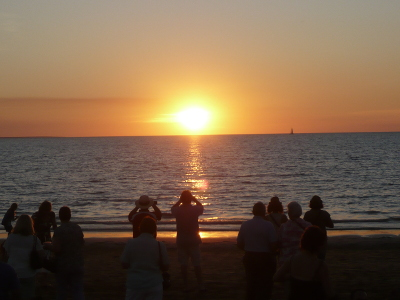
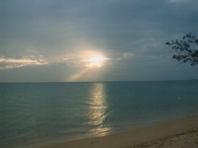

Ich möchte Sie ein wenig mit der rauen
Naturschönheit und der weit zurück reichenden Aborigine-Geschichte
dieses australischen Bundesstaates bekannt machen. Das Northern
Territory bietet zahlreiche Möglichkeiten Neues zu entdecken und
bleibende Eindrücke zu sammeln. Da wären zum Einen die kulinarische
Vielfalt und die unzähligen Kulturen Darwins. Aber es gibt auch die
unberührte Natur , die es zu erleben lohnt. So beispielsweise im zum
Weltnaturerbe zählenden Kakadu National Park oder im Litchfield
National Park. Vielleicht steht Ihnen aber auch der Sinn eher nach
einer Bootsfahrt durch die gewaltige Katherine Gorge oder Sie wollen
das Rote Zentrum mit den Naturwundern Uluru-Kata Tjuta und den Kings
Canyon besuchen. Die Auswahl ist groß und es wird schwer fallen,
sich auf ein paar Aktivitäten zu beschränken.
Ich möchte Ihnen nun einen kleinen Teil meiner Heimat im Norden
präsentieren. Begleiten Sie mich also auf eine kurze Reise zu
folgenden Stationen:
Darwin
Starten werden wir unsere kleine Reise
in Darwin, der tropischen Hauptstadt des Northern Territory. Hier
genießt man einen besonders entspannten Lebensstil. In Darwin leben
Menschen aus über 50 Nationen. Die bunte regionale Mischung der
Stadt spiegelt sich überall wider, sei es durch kulturelle oder
kulinarische Vielfalt.
Geniessen Sie das angenehme, warme Klima und den Schmelztiegel der
Küchen und Kulturen auf den zahlreichen Freiluftfestivals und
Märkten der Stadt. Erkunden Sie die teils dramatische Geschichte in
den Museen und Galerien – von den Luftangriffen während des 2.
Weltkrieges bis zu den Zyklonen der jüngeren Vergangenheit. Oder
segeln Sie in den Sonnenuntergang, vorbei an Krokodilen. Tauchen Sie
am Abend ein in das nächtliche Treiben und spüren Sie die
jugendhafte Energie dieser lebhaften Stadt.
Das von Sandlagunen und Parks gesäumte
Hafenviertel lockt seine Gäste mit abwechslungsreichen Aktivitäten.
Hier findet man zahlreiche Restaurants und Geschäfte. Sie
können in der Lagune baden oder am Kai angeln. Zudem sollten Sie es
nicht versäumen, frisch gefangenen Fisch und Meeresfrüchte in einem
der Restaurants im Freien zu genießen. Bummeln Sie anschließend an
den Ufervillen vorbei und erfahren Sie auf den Fußwegen und durch
die öffentlich ausgestellten Kunstwerke viel Wissenswertes über die
reiche Geschichte dieser Gegend. Hier im Hafennviertel haben vor
allem die Larrakia-Aborigines, indonesische Händler und europäische
Siedler ihre Spuren hinterlassen. Heute begegnet man vor allem
zahlreichen Familien, Geschäftsleuten und natürlich Urlaubern.

Ein unbedingtes Muss in Darwin ist der
Besuch des in der Trockenzeit von Mai bis Oktober an jedem
Donnerstag stattfindenden Mindil Beach Market. Vor einem tropischen
Hintergrund können Sie hier asiatische und andere kulinarische
Köstlichkeiten probieren. Entdecken Sie in die geschmackliche
Vielfalt des asiatisch-pazifischen Raums.
Dieser geschäftige Markt ist bei Einheimischen und Touristen
gleichermaßen beliebt. Stöbern Sie an den zahlreichen Ständen nach
Souveniers und lassen Sie sich von den vielen Künstlern in ihren
Bann ziehen bevor Sie kurz vor Einbruch der Dunkelheit zum Strand
gehen um dort mit vielen Hundert anderen Menschen einen
faszinierenden Sonnenuntergang zu erleben.
Einige weitere Impressionen aus Darwin habe ich für Sie in der
folgenden Fotogalerie zusammengestellt. Überzeugen sich vom Flair
dieser Stadt.
Darwin City (1)
Darwin City (2)
Darwin City (3)
Darwin Waterfront (1)
Darwin Waterfront (2)
Mindil Beach (1)
Mindil Beach (2)
Mindil Beach (3)
Mindil Beach (4)
Mindil Beach (5)
Em Dee
Litchfield National Park
Von Darwin aus ist
der Litchfield National Park in etwa zwei Autostunden zu erreichen.
Fahren Sie über den befestigten Stuart Highway oder nutzen Sie
alternativ die Schotterstraße hinter dem Berry Springs Nature
Reserve. Während der Regenzeit zwischen November und April kann
diese jedoch gesperrt sein. Wollen Sie sich nicht so sehr auf das
Fahren in unbekanntem Terrain konzentrieren sondern lieber die
reizvolle Landschaft bewundern? Auch das ist kein Problem.
In Darwin werden zahlreiche Pauschaltouren angeboten.
Der Litchfield National Park ist mit seinen üppigen Wäldern,
den spektakulären Wasserfällen und den beeindruckenden hoch
aufragenden Termitenhügeln ein beliebtes Ausflugsziel.
Alle wichtigen Naturattraktionen sind von der sich durch den Park
ziehenden Hauptstraße sehr gut erreichbar. In den abgelegeneren
Gebieten des Naturparks können Sie auch übernachten und zelten.
Oder Sie erkunden diese auf einer Wanderung bzw. im Geländewagen.
Staunen Sie über die beeindruckenden Termitenhügel. Nur wenige
Kilometer hinter dem Parkeingang erstrecken diese sich über ein
großes Gebiet. Unzählige Termiten haben die Hügel in
Nord-Süd-Richtung errichtet, um das innere vor der Sonne zu
schützen. Vom nahe gelegenen Fußweg können Sie die imposanten Bauten
bewundern, von denen manche beachtliche Höhen erreichen. Man hat das
Gefühl, in eine surreale Landschaft einzutauchen.
In regelmäßigen Abständen finden Sie Wasserfälle.
So laden z. B. die Florence Falls dazu ein, die befestigte Straße zu
verlassen und ein erfrischendes Bad in klarem Wasser zu nehmen.
Schwimmen Sie unter die Wasserfälle und erleben Sie
die Kraft der Sturzbäche, die Ihnen fast die Luft zum Atmen nimmt.
Oder lassen Sie sich etwas abseits der tosenden Wassermassen treiben
und genießen die idyllische Landschaft ringsum.
Nach dem Bad bietet sich ein kleines Picknick inmitten von
Bergkängurus und Wallabys an. Frisch gestärkt können Sie sich auf
den ca. 1,5 km langen Florence Creek Walk zum beliebten
Buley Rockhole begeben. Hier mitten im Busch finden Sie mehrere
Felsbecken und natürliche Whirlpools. Da wird es schwer, nicht
erneut ins Wasser zu steigen. Setzen Sie Ihren Weg fort und
bestaunen die sich über zwei steile Hänge hinabstürzenden
Tolmer Falls.
Eine weitere Attraktion des Litchfield National Park sind die Wangi
Falls. Es sind die größten und am leichtesten zu erreichenden
Wasserfälle des Parks. Erfrischen Sie sich in den Felsenbecken,
und besuchen Sie die Aussichtsplattform am Fuße des Wasserfalls.
Von hier aus können Sie auf dem Wangi Falls Walk durch
Monsunwälder einen Steinhang erreichen. Folgen Sie dem Weg, so
gelangen Sie zum Walker Creek. Dort finden Sie zahlreiche
Zeltplätze und Möglichkeiten ein Picknick zu veranstalten oder
erneut ein erfrischendes Bad zu nehmen.
Falls Sie planen, mehrere Tage im Park zu verbringen um die
zahlreichen Sehenswürdigkeiten in Ruhe zu erkunden, können Sie Ihr
Zelt auf den wunderschön gelegenen Campingplätzen in der Nähe von
Wangi und Florence Falls, Buley Rockhole und Walker Creek
aufbauen.
Kakadu National Park
Der Kakadu National Park ist Australiens größter Nationalpark.
Hier erwarten Sie viele abwechslungsreiche Eindrücke. Sie finden
eine reichhaltige Tier- und Pflanzenwelt, zahlreiche
Wasserfälle und Wasserlöcher vor. Natürlich werden Sie auch den
prähistorischen Krokodilen begegnen. Erklimmen Sie steile Felswände
und bewundern Sie Felsmalereien, die bis zu 50.000 Jahre alt
sind. Die Besitzer des Landes - die Bininj/Mungguy
-Aborigines - werden Ihnen viel über die Kultur und Lebensweise der
Ureinwohner vermitteln.
Der Kakadu Nationalpark hält für seine Besucher
zahlreiche Schätze bereit.
Interessieren Sie sich für die Kultur der Ureinwohner? Dann schauen
Sie sich die Spalten im Stein, welche die Ahnen aus der Traumzeit
im Nourlangie Rock hinterließen an. Oder betrachten Sie in der
nahe gelegenen Anbangang Gallery eine Zeichnung des "Blitz-Mannes",
dem Urahn aus der Traumzeit. Der Legende nach kontrolliert er noch
immer die heftigen in der Regenzeit auftretenden Gewitterstürme.
Bestaunen Sie auch eine etwa 23.000 Jahre alte Zeichnung der
Regenbogenschlange. Im Kakadu Nationalpark finden Sie die
höchste Konzentration von Felskunst der Aborigines.
Sie können Hand- und Fußabdrücke von Tieren, Jägern und
Traumzeitfiguren entdecken und finden Unterkünfte, Steinwerkzeuge
und die zeremoniell aufgetragene Ockerfarbe. Bei einer geführten
Tour oder mit Hilfe von Informationsschildern erfahren Sie, wie die
Naturgeschichte der Region durch die Kunst veranschaulicht wird.
Der Kakadu Nationalpark beheimatet ein Viertel der australischen
Süßwasserfischarten und ein Drittel der australischen Vogelarten.
Den Artenreichtum können Sie auf verschiedenen Touren erleben. So
führt Sie z. B. der Gubarra Pools Walk vorbei an Sandsteinklippen
und hinein in schattige Monsunwälder. Auf dem Bubba Walk hingegen
wandern Sie durch Feuchtgebiete. Der Weg ist gesäumt von Zimtahorn,
Pandanus-Bäumen, Palmfarnen und Lotuslilien. Sehen Sie den
atemberaubenden Jim Jim Fall, der aus mehr als 250 Metern in die
Tiefe stürzt.
Natürlich können Sie den Nationalpark auch auf dem Wasserweg
erkunden. Fahren Sie mit dem Boot auf dem East
Alligator River und dem Yellow Water vorbei an Krokodilen,
Barramundi und zahlreichen Vögeln wie z. B. Weißbauch-Seeadlern.
Arnhem Land
Das unberührte Arnhem Land grenzt an den Kakadu National Park,
die Arafura Sea und den Gulf of Carpentaria. Es bietet seinen
Besuchern authentische Einblicke in die Aborigine-Kultur.
Das Arnhem Land ist im Besitz der Yolngu, die hier seit mindestens
60.000 Jahren leben. Nach wie vor pflegen sie eine enge kulturelle
und spirituelle Bindung zu ihrem Land. Übrigens stammt von hier
auch ein Markenzeichen Australiens, das bekannte Didgeridoo.
Schroffe Küsten und Klippen, entlegene Inseln, fischreiche Flüsse,
Regenwälder und Baumsavannen prägen die abwechslungsreiche
Landschaft des Arnhem Land. Die Region ist ein wichtiges
Schutzgebiet für Seekühe, Schildkröten und verschiedene Zugvögel.
Neben diesen Wildtieren sind hier auch die Salzwasserkrokodile
zahlreich anzutreffen.
Im Arnhem Land gibt es mehrere berühmte Zentren für
Aborigine-Kunst. Verschiedene kulturelle Touren mit einheimischen
Reiseleitern führen Sie von diesen Zentren auch zu den weißen
Sandstränden und azurblauen Gewässern von Cape Arnhem. Das
klare Wasser eignet sich perfekt zum Tauchen und Schnorcheln.
Im Arnhem Land gibt es natürlich auch zahlreiche historische
Stätten zu besichtigen, unter anderem die Überreste einer frühen
europäischen Siedlung auf der entlegenen Cobourg Peninsula im Garig
Gunak Barlu National Park.

Die Landschaften im Arnhem Land sind im Wechsel der Jahreszeiten
einem spektakulären Wandel unterworfen. Für Reisen ist die
Trockenzeit (April bis September) am Besten geeignet. In der
Regenzeit muss mit extremen Wetterbedingungen gerechnet werden.
Einige Teile des Parks sind dann geschlossen. Einen guten Eindruck
von den gewaltigen Ausmaßen der Region vermittelt ein Rundflug im
Helikopter oder Kleinflugzeug
Die Unterkünfte im Arnhem Land sind beschränkt. In der gesamten
Region gibt es einige Wilderness Lodges. Sie können aber auch auf
einem der zahlreichen abgeschiedenen Zeltplätze übernachten.
Für einen Besuch im Arnhem Land ist eine Genehmigung erforderlich,
die beim Northern Land Council beantragt werden muss. Ich empfehle
, das Arnhem Land im Rahmen einer Tour zu besichtigen. Dann
kümmert sich der Veranstalter um die Einreisegenehmigung.
Damit sind wir am Ende unser Reise durch einen kleinen Teil des
Northern Territory. Ich hoffe, es war ein interessanter Trip für Sie.
Ja und natürlich würde ich mich freuen, Sie irgendwann einmal hier
begrüßen zu dürfen. Bis dahin Tschüß und auf Wiedersehen.